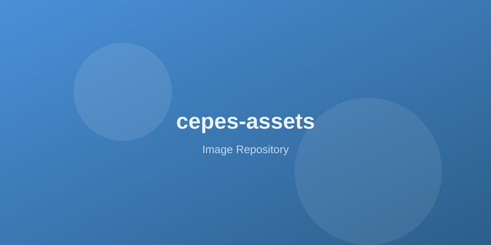

A simple image repository. Images are served via GitHub raw content URLs and can be embedded in any HTML page using the <img> tag.
images/icons/sample-icon.svg
images/logos/sample-logo.svg

images/backgrounds/sample-background.svg
<!-- Using a raw GitHub URL (works from any webpage) -->
<img src="https://raw.githubusercontent.com/muldon/cepes-assets/main/images/icons/sample-icon.svg"
alt="Sample Icon" width="64" height="64">
<!-- Using a relative path (works from within this repo's GitHub Pages) -->
<img src="images/logos/sample-logo.svg" alt="Sample Logo" width="200" height="60">